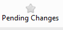
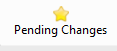
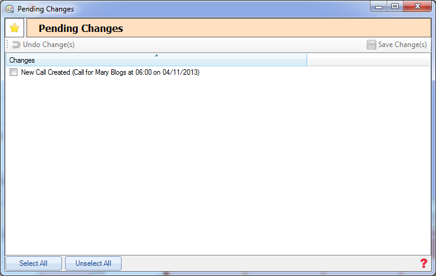

The pending changes screen allows you to view and changes you have made since the last changes were saved. This can be accessed from the main form.
When there are changes the icon will display as a gold star, otherwise it will be gray.
No Changes Pending

Changes Pending

When loading the form you will see a list of all the pending changes with a check box next to each.

You either have the option of saving a pending change or undoing it.
Note: Any changes that are made and not saved will be lost when Cura is closed.